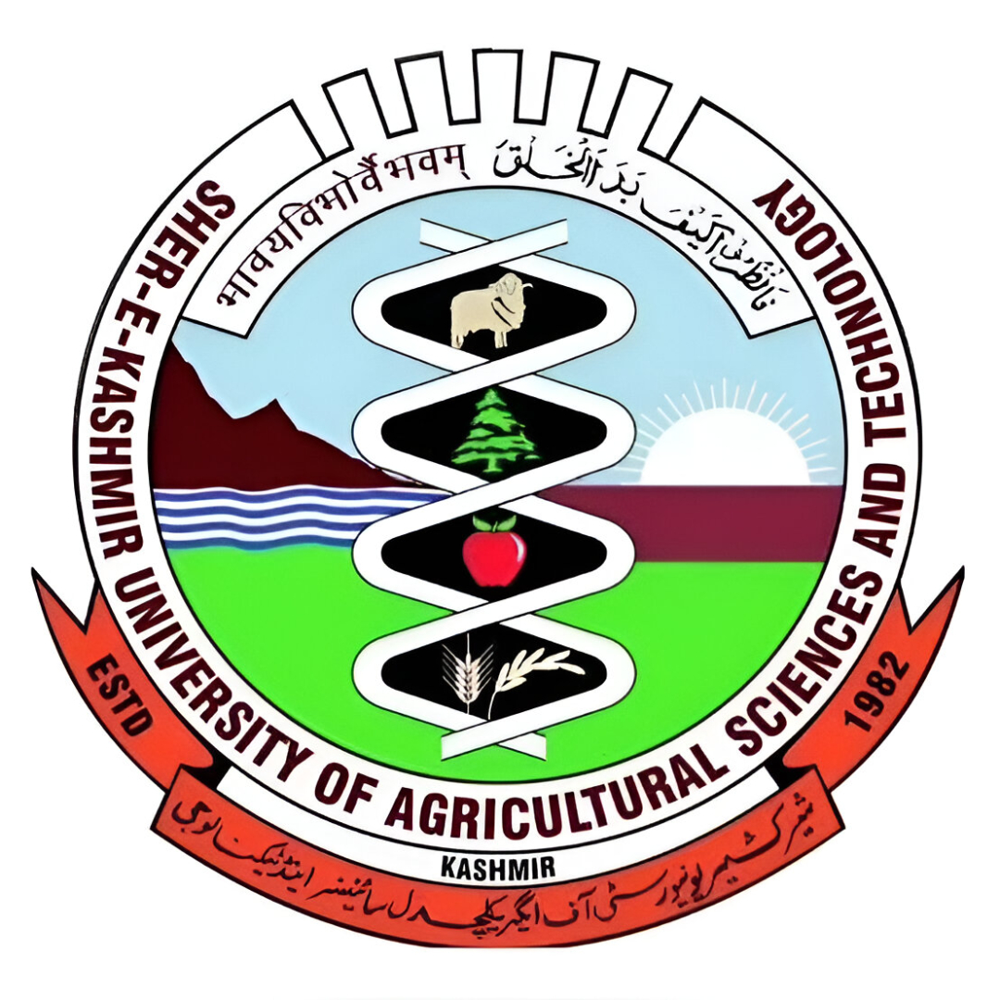
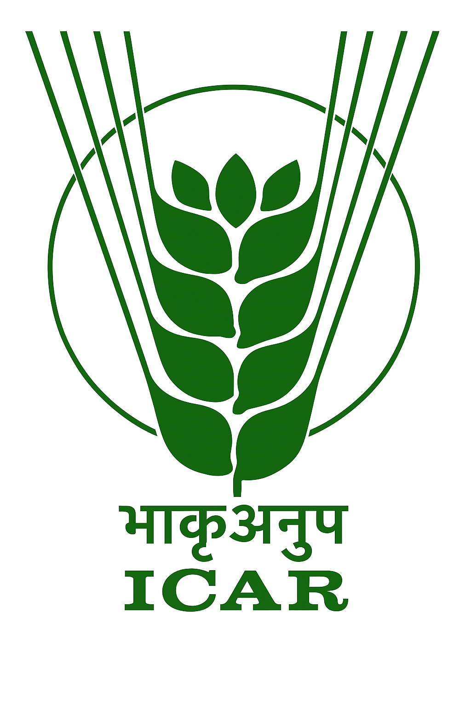
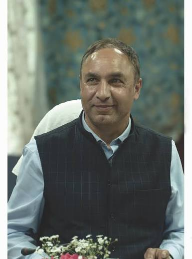
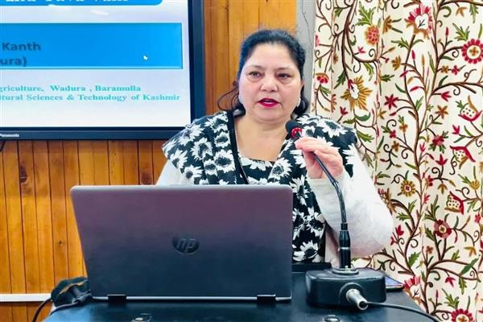
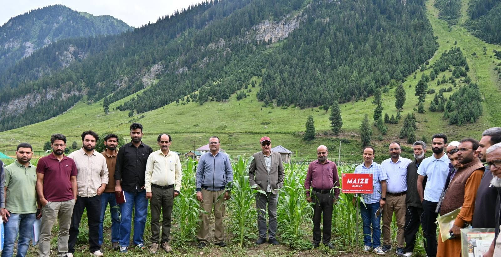

Training
Nursery Management
Hands-on session on raising healthy nursery beds and seedling management.

کرشی وگیان کیندر، گریز
कृषि विज्ञान केंद्र गुरेज़

SKUAST-Kashmir · ICAR · Gurez Valley
Field demonstrations, training and applied research strengthening high-altitude agriculture across the Gurez Valley.
Krishi Vigyan Kendra (KVK) Gurez functions under SKUAST-Kashmir and ICAR. Located in the high-altitude Gurez Valley, we bridge the gap between agricultural research and ground-level farming practice through on-farm trials, technology demonstrations and skill-based capacity building.
Our mandate covers crop production, horticulture, livestock management, agroforestry and natural resource management — all calibrated for the unique cold-climate, short-season conditions of Kashmir's northern highlands.
500+
Farmers Trained
30+
Demos Conducted
12+
Villages Covered
8
Technical Staff

Hon'ble Vice Chancellor
SKUAST-Kashmir
We are committed to drive our institutional changes towards a system of education that fosters human values, scholarly output and a responsible knowledge society and are working towards building our capacity to develop science based solutions to issues confronting farming.

Director of Extension
SKUAST-Kashmir
Overseeing and coordinating all extension education programmes, KVK activities and farmer outreach initiatives across SKUAST-Kashmir's network.
Promotion of tulip cultivation as a high-value enterprise in Gurez Valley.
Skill-building sessions on nursery raising, IPM, post-harvest handling and livestock care.
Revival, conservation and promotion of indigenous Gurezi Kala Zeera through scientific and organic cultivation practices.
Promotion of medicinal & aromatic plants and sustainable agroforestry systems.
Animal health camps, nutrition advisory and breed improvement support for smallholders.
Soil testing, composting, and watershed-level conservation advisory for farming families.
On-Farm Trials are conducted directly on farmers' fields to evaluate and validate improved technologies under actual agro-climatic conditions of Gurez Valley. They bridge laboratory findings with real-world farming practice.

Evaluation of improved maize varieties for yield, maturity and adaptability under Gurez's short growing season.

Testing high-biomass fodder varieties suited to cold altitudes for improved livestock feed availability through winter.

On-farm screening of improved vegetable varieties for local agro-climatic suitability and marketability in Gurez.

Comparative study of lentil and pea varieties to identify best performers for high-altitude nitrogen fixation and food security.

Trials on saffron, lavender and other medicinal & aromatic plants as alternate income sources for Gurez farmers.

Evaluation of improved feeding practices and mineral supplements for enhanced milk yield and livestock health in winter.
Front Line Demonstrations are conducted on farmers' fields under direct supervision of KVK scientists to showcase the yield and income advantage of improved technologies over existing local practices. FLDs create visible proof for neighbouring farmers.
30+
FLDs Conducted
6
Crop Enterprises
12+
Villages Covered
200+
Farmers Reached

Demonstration of hybrid maize varieties with recommended package of practices — seed treatment, spacing and fertiliser schedule.

Front line demonstration of commercial tulip cultivation as a high-value income opportunity for Gurez Valley farmers.

Demonstration of improved fodder varieties to address the critical winter feed shortage for livestock in the Gurez Valley.

Showcasing improved vegetable cultivation with polyhouse technology for extended season production in cold conditions.

Demonstration plots of lavender, saffron and other high-value MAPs for alternate livelihoods and forest conservation.

Demo of scientific animal management — balanced rations, deworming schedules, and housing improvement for cold climates.
Hands-on session on raising healthy nursery beds and seedling management.

On-site demonstration of high-yield fodder varieties and their management.

Community mela connecting farmers with extension services and quality inputs.

Evaluation of improved maize varieties under high-altitude agro-climatic conditions.

Free veterinary services, vaccination and nutrition advisory for village livestock owners.

Village-level awareness on soil health cards, organic inputs and nutrient management.

Senior Scientist & Head
Overall leadership and strategic direction of KVK Gurez programmes.
Scientist (Agroforestry)
Agroforestry and medicinal & aromatic plant systems for sustainable livelihoods.
Scientist (Plant Protection)
Entomology, natural pest management, beneficial insects and organic crop protection.
Programme Assistant (Computer)
ICT support, data management, digital documentation and online dissemination.
Farm Manager
Farm operations, on-farm demonstrations and logistical support.
Programme Assistant (Lab)
Lab analysis, sample handling and technical support during training.
Accounts Assistant
Manages financial records, bills, payments, and day-to-day accounting activities of KVK Gurez
After attending the KVK demonstration, I adopted the improved maize variety — my yield went up considerably compared to the previous season.
Ali
Dawar, Gurez
The livestock health training helped our entire village improve calf survival rates through the harsh winter months.
Zarina Begum
Gurez
KVK's timely seed distribution and soil health advice helped our group get quality inputs exactly when we needed them.
Fayaz Ahmad
Bandipora
Real-time data from Open-Meteo · Auto-refreshes every 30 min
TODAY'S DETAIL
7-DAY FORECAST
TEMPERATURE TREND (7 DAYS)
Lat 34.633964 • Lon 74.839485
Check travel advisories in winter — road closures occur during heavy snowfall.
.jpg)
.jpg)
.jpg)
.jpg)
.jpg)
.jpg)
.jpg)
.jpg)
.jpg)
.jpg)
.jpg)
.jpg)
.jpg)
.jpg)
.jpg)
{kind=link}
{kind=link}
{kind=link}
{kind=link}
{kind=link}